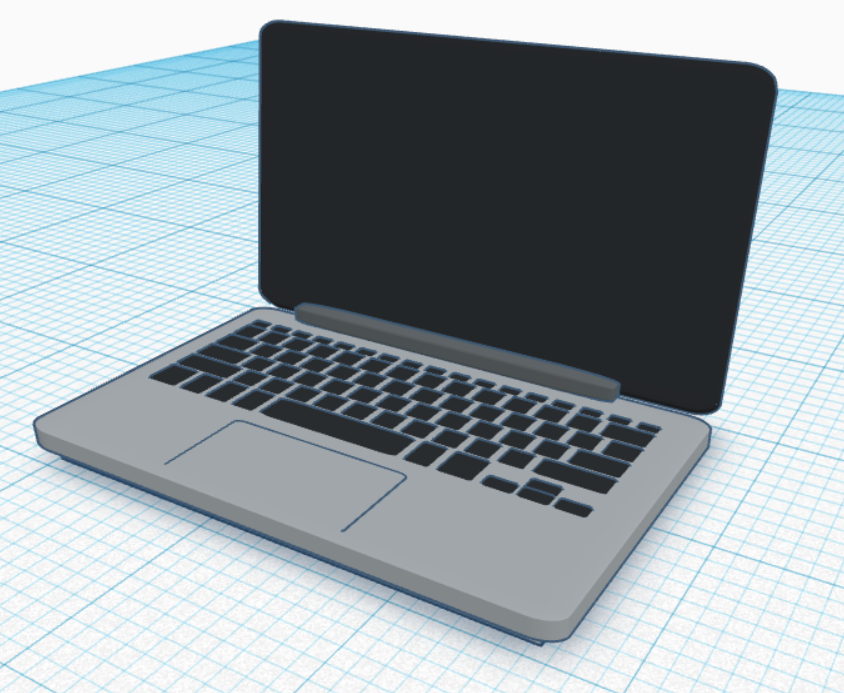
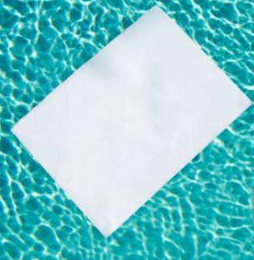
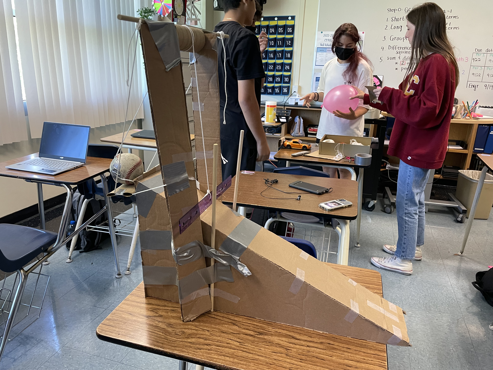

TGHR Engineering
Week #2 | Date: 09/02/2022
- I learned about the different professions of engineering. There are people that design the products with dimensions and measurements and people who actually
make or manufacture the project.
- I did a safety quiz about callouts, how to handle most tools, and what to wear when in the lab. The main points are that there should be no loose clothing
or hair and you should wear safety equipment at all times while in the lab. You should also listen and follow callouts.
- After, I designed my own laptop on TinkerCad for the challenge and it turned out pretty good.
yhhy

Week #3 | Date: 09/09/2022
- I designed and edited a Rube Goldberg machine on TinkerCad.
- I measured and designed an E on a sheet of paper. I measured and cut out my partner's E on a blank sheet of paper.
I learned that it's hard to draw straight lines without graphed paper.
I also learned that using the right units is really important.
This project was mainly a review of how to use a ruler and the importance of materials.

Week #4 | Date: 09/16/2022
- My group started building our Rube Goldberg machine with cardboard. We haven't fully finished it yet, but we're close.
We've done the ramp and pillars for the pulley. We also have the toy car ready and toilet paper for the pulley ready.
- The challenge for this week was designing a boat out of a single piece of paper. Everyone built actual boats with origami,
but I suck at origami. Because of this, I wanted to test how a sheet of paper would do if it was unfolded. This would give it
more surface area for it to float, and if weight was distributed evenly, then it could theoretically float. This turned out to be
the solution, and my piece of paper failed only because the weight wasn't distributed evenly.

Week #5 | Date: 09/23/2022
My group worked on building the Rube Goldberg machine all week. We improved our design by making it to be able to be started without
holding the baseball. We created practically a drawbridge for the baseball. We attached a string that went to the top of the pillars
to a flattened toilet paper roll. The design worked really well and made our machine consistent. We tested the machine and popped
the baloon first try. After that I just helped other groups with their projects.
